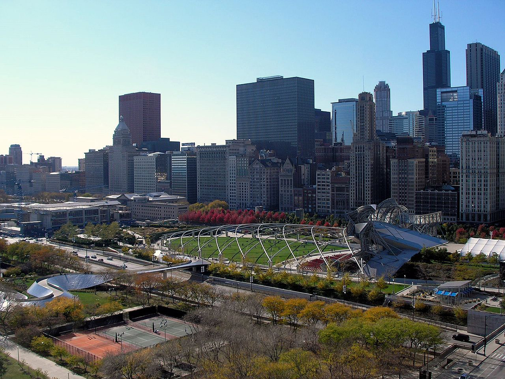

Reject Deal
VII.
"No, I reject your deal," I tell Siren.
"Why?" she says. "I'm giving you everything that ever wanted that comes along with your freedom!"
"Let's see, you get all access room and board at my captor's homes, and where will that leave my cellmates? You'll take their favorite toys and food, and they'll be stuck with nothing except a ghost haunting and taking their stuff everytime they close their eyes."
"You fool! How will you survive in the evening? I heard about your trip to Millenium Park when you spoke with Princess. You won't get there until late evening, and that's just by walking there. If humans see a cat roaming around with a collar, they'll be sure to capture you for the reward! And predators, well, they'll eat you."
"I'll take my chances. Goodbye, Siren"
"Moron."
I leave and head south and then west. Siren is right about the predators and humans. I've been lucky so far, but it'll run out without using proper reason and tactics. I take a break and hide in a storm drain near a curb on the street. I take a quick nap, dreaming of being twenty feet tall in my own body with razor sharp teeth. I open my eyes, and I sense that it's evening. I hear cars and people above me. If I continue traveling, I'll reach Millenium Park by morning.
VIII.

"View of the Chicago skyline from 340 on the Park" by Dima Sergiyenko is licensed under CC BY-SA 4.0.
The sun rise as I limp in Millenium Park. I smell grass and hear crickets. The grass feels moist below my paws. I'm missing part of my ear, and I received heavy scratches from several battles with a hawk and fox roaming the city. Fortunately, I got rid of the collar and bell in my last fight when the fox tried to bite my neck. It only got that instead, but not without me receiving major cuts. I approach the Art Institute of Chicago and pass the Jay Pritzker Pavilion. I walk near the trash can and bush where I had parked ship, and I yell, "Fear me, Earthlings!" It's the password for my ship to signal when I'm ready to leave. I wait a few minutes. I worry. Perhaps it lost power and cloaking device stopped working? I wait another few minutes. Suddenly, I hear footsteps approaching near me. I turn and spy a police officer coming near me. He whispers on his radio that he found the reported animal. He believes it's the fox that was attacking local animals, and he starts to draw his gun. I begin to run, thinking that I will die. I envision all my friends in both planets around me, every memory and conversation. Just as I'm about to accept my end, I feel my hair stand up, look up, and see a bright light above me.
IX.
I'm inside my ship. Communications are upnow.The police officer fainted when the flying saucer--no bigger than desk--approached and snatched me up into the heavens. I look at thousands of unread messages. I see reports where they've concluded that I died on my mission to Earth. I have two lives to choose. I think of my friends on both planets. Sure, it's survival of the fittest at my home world, and my colleagues may eat me if I run out of use for them, but they still await for my return so they can decide whether earthlings poses a threat for us worthy of us to crush and plunder before they get too advanced. Sure, my captors, despite their weird habbits are oddly endearing just their prisonors whom they keep as pets. I'll miss my committee meetings with Bernard, Speedy, an thed menagerie of other animals that Meldoy takes home from work. I fly above Chicago, seeing the whole skyline near Lake Michigan and the sun above the clouds in the backdrop of light blue. I look at two buttons: a big green button to autopilot back to my planet near Tabby's Star, and a big red button that will enable me to safely eject on the ground.